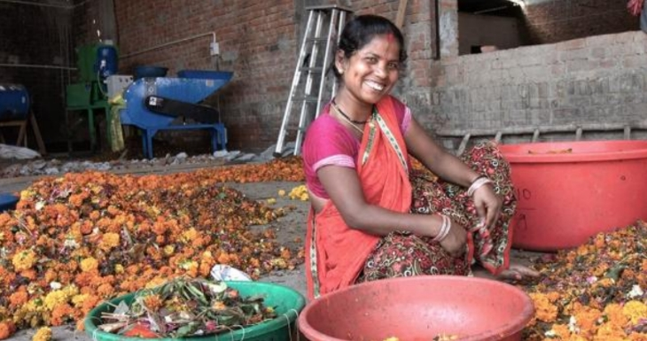
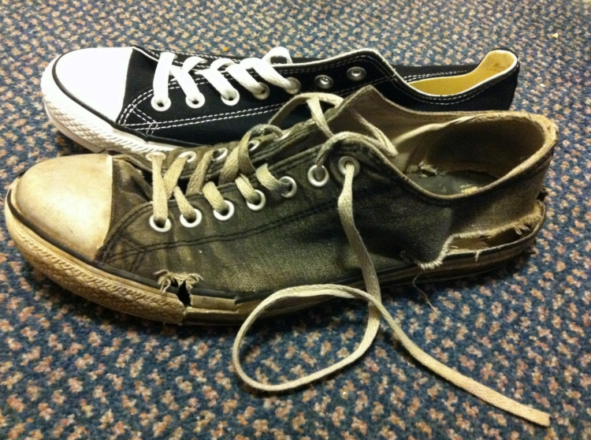
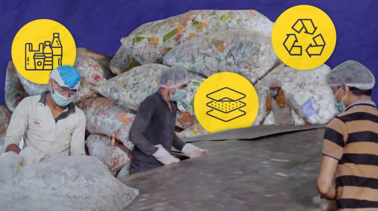
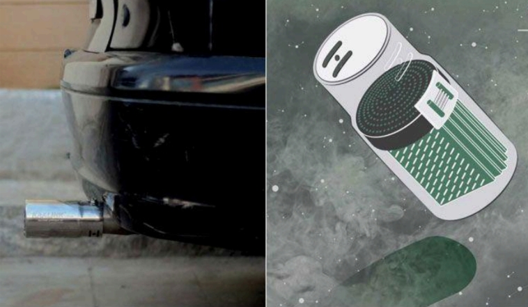
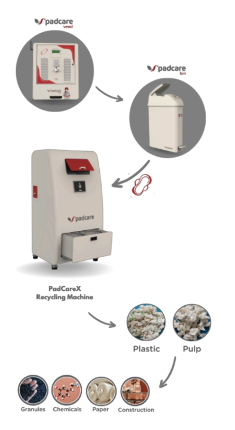

Introduction
Waste is no longer trash in India. Thanks to a growing wave of innovative startups, garbage is being transformed into beautiful and creative things which prove to be useful in our daily life.
These businesses are leading the way in upcycling ideas, eco crafts, DIY recycling, and sustainable living in India. They are a true form of resilience as they have thought of a change to transform our country by the means of creativity and will.
Here are some of the top Indian startups that are turning waste into wealth by showing how smart thinking, care for the planet and community can come together to make this world a better place.
1. HelpUsGreen / Phool.co
Ankit Agarwal and Karan Rastogi founded HelpUsGreen in Kanpur, Uttar Pradesh, in 2015. Their goal is to prevent tons of temple flower waste from contaminating rivers, particularly the Ganges, by using flowercycling® to give the waste a second chance at life.
They gather flower waste from temples and other places of worship that would otherwise end up in rivers or landfills and use it to make compost, incense cones, and biodegradable packaging.
Toxic chemicals and pesticide residues may be present in such abandoned floral offerings. They damage ecosystems and contaminate rivers when they break down in water.
By doing this, they revitalize waste and prevent floral debris from entering waterways. This is a striking illustration of eco crafts! Creating something fresh, lovely, and significant with natural, fragrant materials is such a smart move.

Their meaningful products and work can be found on their website phool.co helpusgreen
2. GreenSole
Shriyans Bhandari and Ramesh Dhami, two long-distance runners, founded GreenSole after observing that although the soles of their running shoes frequently remained almost intact, the sides would wear out quickly. Their concept was to upcycle these old shoes into brand new footwear rather than throwing them away.
GreenSole is a social startup that makes new bags, mats, and slippers out of used shoes.
Their simple yet profound mission is to give every pair of shoes that are discarded a second chance at life, thereby lowering landfill waste and giving impoverished children comfort.
GreenSole's founders teach rural women how to fix shoes, which benefits society and the environment. Their approach combines a circular mindset with do-it-yourself (DIY) recycling, like disassembling old shoes, so that these upcycled items can be recycled once their useful lives are over.
It is like giving life to a futile thing. According to a podiatry article on HMP Global Learning Network, “over 450 million people” in rural India live in poverty or deprivation based on certain poverty indicators. Such poverty can actually make it very hard for people to buy good footwear.
It might be a miniscule thing for the people who are privileged but for the ones who suffer to fill their stomachs with their hard earned money, it is quite difficult to afford even a cheap pair of footwear.

Therefore, the work of GreenSole is truly outstanding and must be appreciated.
3. Ricron Panels
Based in Gujarat, Ricron Panels is an Indian clean-tech startup that transforms primarily non-recyclable, multi-layer plastic (MLP) waste, such as snack wrappers, biscuit packs, and flexible plastic laminates, into long-lasting and durable building materials like sheets, panels, roofing, and furniture parts.
Giving plastic a second life rather than allowing it to contaminate the environment is a crucial component of the circular economy.
A company like Ricron Panels demonstrates how upcycling concepts and zero waste hacks can scale into industrial solutions for a nation like India, where waste volumes are enormous and conventional recycling systems have limitations.
This is a great illustration of how "waste" can be turned into value, promoting eco-construction and eco-crafts as well as sustainable living in India.
One report states that for every tonne of their product manufactured, about 4 tonnes of CO2 emissions are saved. Also, as of 2024 they report recycling over 1,218 tonnes of MLP waste in a year and about 4,872 tonnes of CO2 emissions avoided.

Their work demonstrates the power of upcycling ideas. For organisations focused on sustainable living, environment and community empowerment, this start-up surely offers inspiration and practical lessons.
4. Graviky Labs (AIR-INK)
One possible raw material in our environment is pollution itself. A Bengaluru based startup called Graviky Labs uses carbon soot from automobile and industrial emissions collected through KAALINK, a retrofit filter that attaches to diesel generator exhausts, vehicle tail-pipes, industrial chimneys, etc., to create AIR INK, a safe ink used by designers and artists. The KAALINK captures particulate matter.
This is a great illustration of upcycling concepts that turn waste from air pollution into significant art. A beautiful method of transforming harm into value, each tiny bottle of AIR INK symbolizes minutes of pollution diverted into creativity.

The shift from “waste is worthless” to “waste is a resource” is central to the upcycling ideas. Graviky is an extreme example of creativity and innovation.
5. PadCare Labs
PadCare Labs, with its headquarters in Pune, Maharashtra, was founded by Ajinkya Dhariya in around 2018.
It addresses a significant but mostly unseen waste stream- used sanitary pads. Their goal is to create a complete circular system for the collection, processing, recycling, and disposal of menstrual waste.
The business has created menstrual pad disposal bins known as “PadCare Bins”, placed in restrooms.
A recycling device called the "PadCare X" or "5D system" turns used pads into materials that can be used again, such as cellulose.
In India, an estimated 12 billion sanitary pads are used annually. Many of these end up in landfills, water bodies or burning/disposal that is unsafe.
Super-absorbent polymers (SAPs) and plastics found in sanitary pads take hundreds of years to break down. Waste workers' health is at risk due to improper disposal, which also pollutes the environment.
Therefore, it is very crucial for a safe disposal system or an innovative idea like PadCare’s.
According to their own website (Padcare Labs), they recycle “240 lakh pads a year” (i.e., 24 million) under their system.
PadCare Labs is a powerful example of how a “hidden” waste stream-menstrual pads which are considered a taboo, can be turned into an opportunity with improved hygiene, dignity and sustainability.

Their story is an epitome of sustainable living in India that includes even the kinds of waste we often overlook.
Conclusion
Young people learn from these tales that sustainable living in India is a real endeavor that is currently taking place, not just a pipe dream.
The quintessential ideas of the above start ups show that waste is not just a burden, it’s an opportunity that takes us towards a greener and cleaner world.